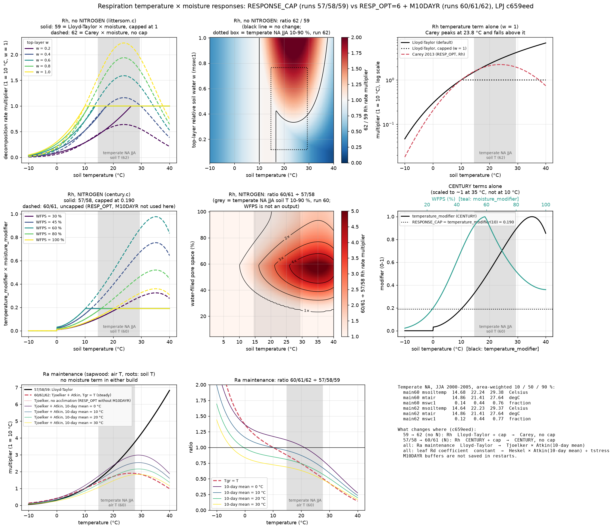
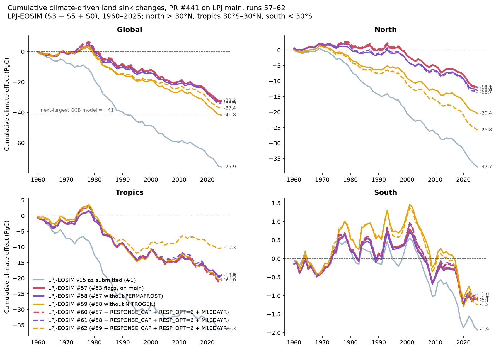
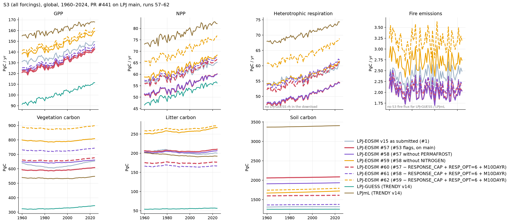
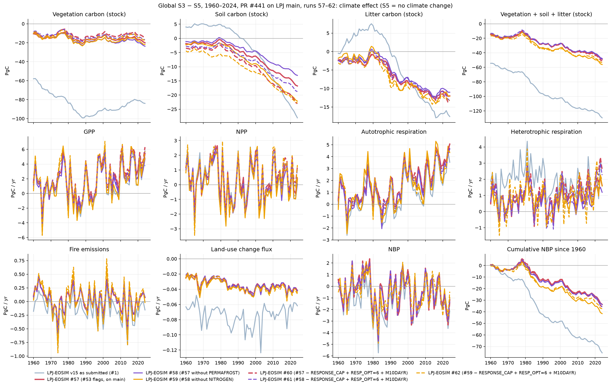
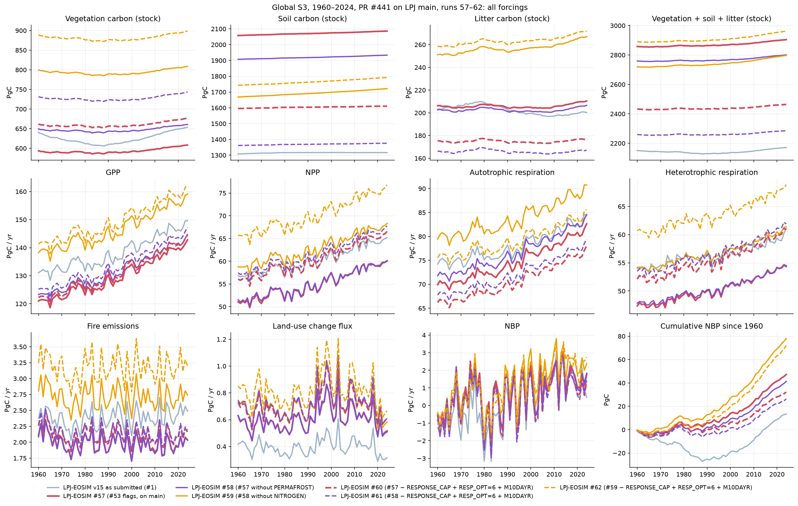

PR #441, LPJ c659eed. Runs 60 / 61 / 62 = 57 / 58 / 59 with RESPONSE_CAP removed and RESP_OPT=6 + M10DAYR added. S0 + S3 + S5, CRU TS 4.10, fresh spinup. Solid lines: 57–59; dashed: 60–62 (same colour per pair).
| S3 − S5 + S0, 1960–2025 (PgC) | Global | North (>30°N) | Tropics | South (<30°S) | S3 cum. NBP 1960–2024 |
|---|---|---|---|---|---|
| 57 → 60 (all PR flags) | −32.2 → −33.9 | −12.1 → −12.3 | −19.1 → −20.6 | −1.1 → −1.0 | 47.2 → 32.2 |
| 58 → 61 (no PERMAFROST) | −33.1 → −33.9 | −13.0 → −13.7 | −19.0 → −19.3 | −1.1 → −1.0 | 41.3 → 26.2 |
| 59 → 62 (no PERMAFROST, no NITROGEN) | −41.8 → −37.4 | −20.4 → −25.8 | −20.3 → −10.3 | −1.1 → −1.2 | 78.0 → 72.0 |
TRENDY v14 median S3 cumulative NBP 1960–2024: 44.5 PgC. Full table: climate_effect_table.csv.

Climate ranges used for shading: temperate_na_jja_ranges.csv.



